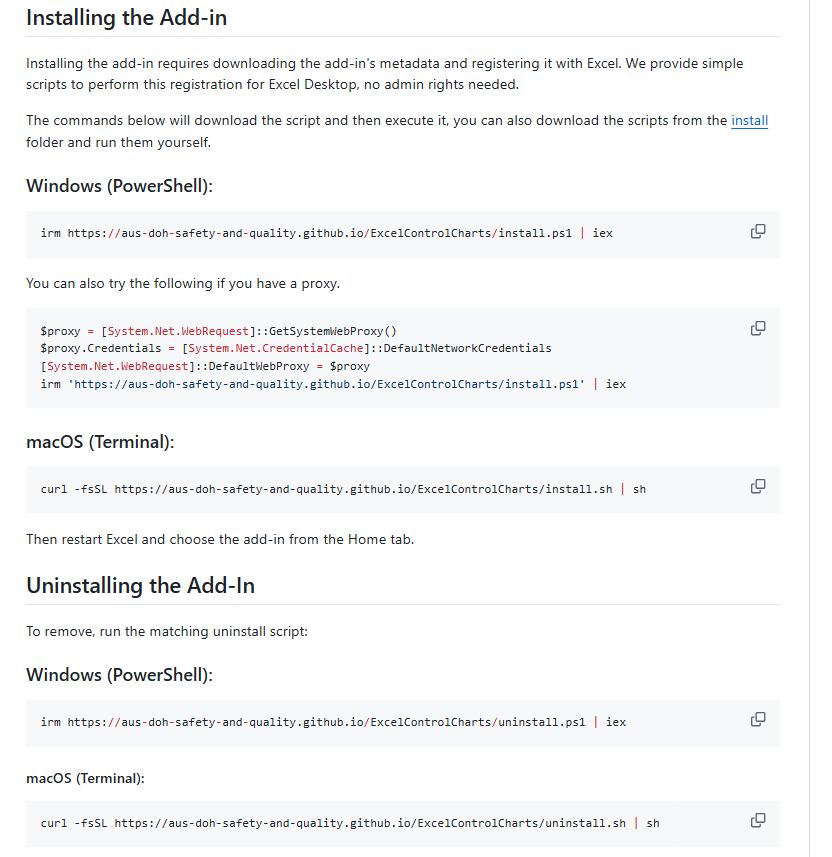
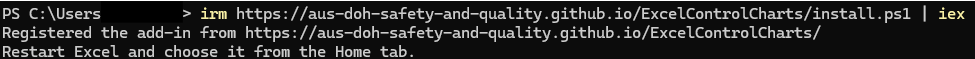
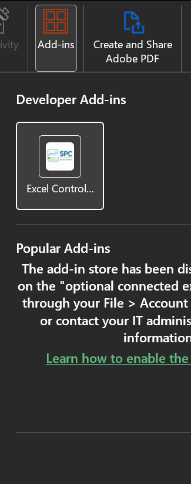
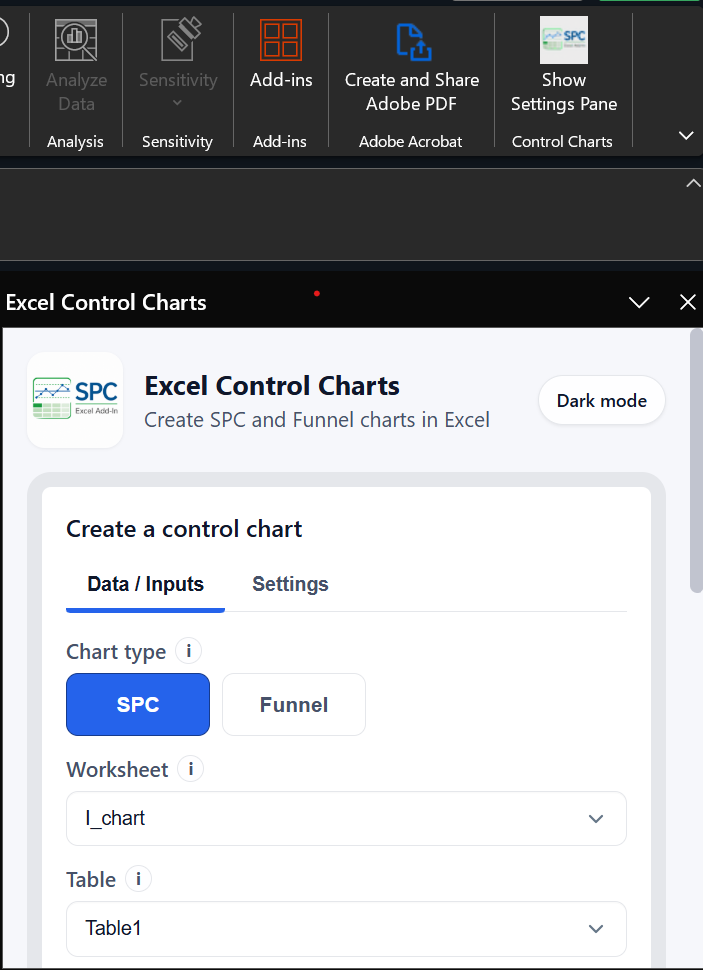

Step 1
Install and open the add-in
Follow the Windows or macOS command on the project installation page. Restart Excel when the installation completes. Open the workbook that holds your data, then select Home and choose Show Settings Pane.




Step 2
Getting started using the Excel Add in
The add-in reads standard Excel tables. Select your data range and use Insert > Table, confirming that the first row contains headers.
Step 3
Select the worksheet and fields
- Choose the worksheet. The selector follows the active Excel worksheet automatically.
- Choose the table. Tables available on the selected worksheet appear in the table selector.
- Choose the category and numerator. These are required to create a chart.
- Add optional fields. Choose a denominator for rate-based SPC charts, or an SD column for Xbar charts.
Step 4
Configure the chart
Choose SPC or Funnel, then use the settings tab to adjust chart-specific options such as labels, limits, date display, and appearance. The preview updates in the pane as you change data or settings.
Split limits on click
For an SPC chart, turn on Split Limits on Click and click a data point in the interactive taskpane preview. The preview recalculates limits on either side of that point. Click the same preview point again to remove the split.
When to use each chart
Choose SPC for a time-ordered series and process variation. Choose Funnel for comparing rates or values across groups where differing denominators should be considered.
Step 5
Create the chart in Excel
When the preview is ready, select Create plot. The add-in inserts the rendered chart into the selected worksheet as an image. You can move and resize it with Excel's normal picture controls.